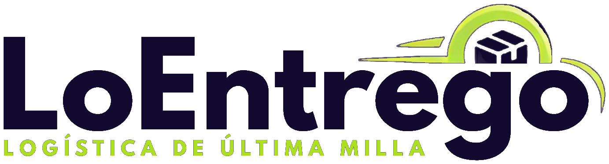
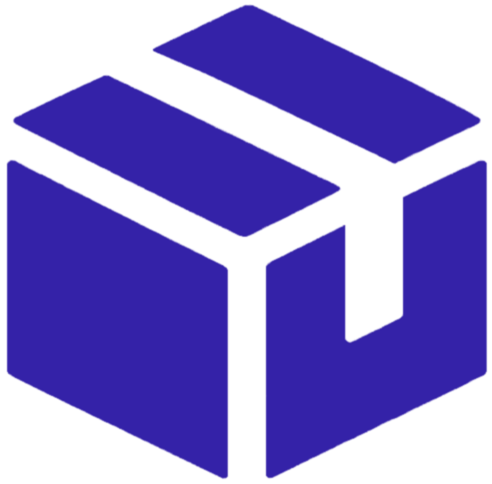
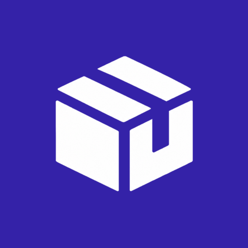

Todo comunica movimiento: la caja, la ruta, el lima que empuja hacia adelante.
01
Esencia
LoEntrego es logística de última milla para comercios, ecommerce y sector público en Bogotá y sus alrededores. Llevamos el pedido del comercio a la puerta del cliente con condiciones claras y sin letra pequeña.
Precios, estados y pasos a la vista. Nada escondido.
Hablamos de tú, como un aliado del negocio, no como una empresa lejana.
Cada pedido tiene seguimiento, responsable y hora. Siempre sabes dónde va.
“Entregamos tus pedidos al cliente final, con total transparencia en cada envío.”
02
Logotipo
El logotipo combina el nombre en una sans geométrica muy gruesa con un arco lima sobre la “o” final, que se lee como una rueda en movimiento, unas líneas de velocidad y la caja dentro del arco. Debajo, el descriptor “Logística de última milla” en lima, en mayúsculas espaciadas.

Área de protección
Deja alrededor un margen mínimo igual a la altura de la “L”. Nada (texto, bordes, otras marcas) entra en esa zona.
Tamaño mínimo
Por debajo de este ancho el descriptor deja de leerse: usa solo el isotipo.
Usos incorrectos
03
Isotipo
La caja es el símbolo de LoEntrego: un paquete en perspectiva isométrica. Va sin fondo y se usa donde el logotipo no cabe: ícono de la app, favicon, sello en empaques, avatar de redes y como personaje de las animaciones.

04
Color
Dos protagonistas: el azul índigo (marca, confianza) y el lima (acción, movimiento). El lima se reserva para lo importante: botones principales, totales y lo que avanza. Toca un color para copiar su código.
Principales
Familia índigo
Estados de un pedido
Proporción
Azul 60 %Neutros 30 %Lima 10 %
El lima nunca se usa como color de texto pequeño sobre fondos claros: no tiene contraste suficiente. Sobre azul o noche sí funciona en títulos y cifras.
05
Tipografía
Cada producto tiene su voz tipográfica dentro de la familia: geométricas y redondeadas para títulos, sans limpias para el texto. Todas son gratuitas en Google Fonts.
Aa Poppins
Nunito para textos de apoyo.
Títulos 700 · texto 500–600Aa Outfit
Inter para textos, formularios y datos.
Títulos 600–700 con tracking −2 % · texto 400–600Aa Baloo 2
Inter para tablas y datos.
Títulos 700 · texto 400–600Título principal
Título de sección
Subtítulo o nombre
Texto de párrafo para explicar algo con calma y claridad.
Etiqueta de campo · dato secundario
06
Ecosistema
Un solo ADN, tres personalidades. Así cada producto se reconoce como LoEntrego sin ser una copia del otro.
Sitio web
Para conquistar comercios. Azul saturado con luces, cinta lima con mensajes clave, Poppins.
- Fondo azul con brillos
- Cinta lima animada
- Títulos de dos tonos
App comercios y repartidores
Para trabajar todos los días. Franja azul de marca y superficie lavanda clara; modo oscuro automático. Outfit + Inter.
- Franja azul + panel claro
- Mini-ruta de 4 paradas
- Deslizar para confirmar
Panel de administración
Para controlar la operación. Tinta profunda, paneles planos y datos densos. Baloo 2 + Inter.
- Fondo #0B0826
- Barra lateral y tablas
- Lima solo en acciones
Lo que nunca cambia:
Azul índigoLima = acciónLa caja como símboloEsquinas redondeadasLos 5 estados del pedido
07
Componentes
Botones
Un solo botón lima por pantalla: la acción principal. Radio 14 px, alto mínimo 48 px.
Estados del pedido
Por recoger
Recogido
En camino
Entregado
No entregado
Mini-ruta
Por recoger
En camino
Entregado
Cada pedido muestra su avance en 4 paradas: por recoger → recogido → en camino → entregado. Si falla, el último punto se vuelve rojo con una X.
Ticket de pedido
En caminoLE-1042
Andrea Gómez
Cobro contraentrega$45.000
08
Movimiento
La marca se mueve como un envío: salir, viajar y llegar. La animación firma es la ruta punteada con un cometa de luz lima que la recorre y, al llegar al destino, el punto late y suelta ondas. En pantallas de espera (mantenimiento) se usa la caja en camino: el isotipo da saltitos mientras la ciudad pasa detrás.
- Con propósito. Guía hacia lo importante; nunca tapa ni retrasa el contenido.
- Pocas y bien puestas. Entradas de 0,6–0,9 s con salida suave; cascadas de 0,03–0,08 s.
- Sin bucles eternos. Lo repetitivo se detiene tras unas pocas vueltas; en uso diario, la intro completa solo la primera vez.
- Livianas. Solo se anima posición, escala y opacidad.
- Accesibles. Si el sistema pide menos movimiento, todo aparece sin animar.
- Nada sobre el texto. La ruta y el cometa van por zonas libres (por ejemplo, la esquina superior derecha); nunca cruzan títulos ni párrafos.
09
Voz y tono
Hablamos de tú, en frases cortas y concretas, como un aliado del negocio. Explicamos lo que pasa y qué hacer después.
Así sí
“Pedido LE-1046 creado para Laura.”
“Tus pedidos en curso siguen en ruta; solo la app está en pausa.”
“Celular de 10 dígitos que empiece por 3.”
Así no
“Operación ejecutada satisfactoriamente.”
“Error 503: servicio no disponible.”
“Dato inválido.”
Entrega rápidaCondiciones clarasSin letra pequeñaEn caminoAliadoÚltima milla
10
Descargas



Ícono de appPNG · 512×512 Ícono adaptablePNG · Android
Tipografías: Outfit, Inter, Poppins, Nunito y Baloo 2 (Google Fonts, licencia libre).